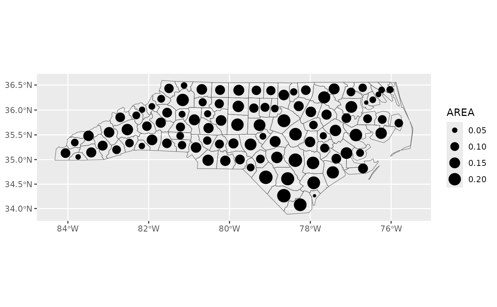

Create a ggplot2 layer with map markers or numbered markers
Source:R/layer_markers.R
layer_markers.RdIf make is TRUE, groupname_col, group_meta, crs, and fn is all passed on to
make_markers.
Usage
layer_markers(
data,
mapping = NULL,
geom = "sf",
make = FALSE,
groupname_col = NULL,
group_meta = NULL,
crs = getOption("maplayer.crs", default = 3857),
number = FALSE,
num_by_group = FALSE,
num_style = NULL,
num_start = 1,
suffix = NULL,
sort = "dist_xmin_ymax",
desc = FALSE,
fn = NULL,
...
)
layer_numbers(
data,
mapping = NULL,
geom = "label",
make = FALSE,
groupname_col = NULL,
style = "roundrect",
size = 5,
sort = "dist_xmin_ymax",
num_by_group = FALSE,
num_style = NULL,
num_start = 1,
suffix = NULL,
desc = FALSE,
fn = NULL,
crs = getOption("maplayer.crs", default = 3857),
label.size = 0,
label.padding = ggplot2::unit(size/10, "lines"),
label.r = label.padding * 1.5,
hjust = 0.5,
vjust = 0.5,
...
)
make_markers(
data,
groupname_col = NULL,
group_meta = NULL,
join = sf::st_intersects,
geo = FALSE,
coords = c("lon", "lat"),
address = "address",
point = TRUE,
crs = NULL,
fn = NULL,
...
)Arguments
- data
Character string (e.g. url, file path, or name of data from package), a
sf,sfc, orbboxobject including data in area.- mapping
Set of aesthetic mappings created by
aes(). If specified andinherit.aes = TRUE(the default), it is combined with the default mapping at the top level of the plot. You must supplymappingif there is no plot mapping.- geom
A character string indicating which ggplot2 geom to use, Default: 'sf'. Options include "sf" (
ggplot2::geom_sf()), "icon" (layer_icon()), "markers" (layer_markers()), "sf_text" (ggplot2::geom_sf_text()), and "sf_label" (ggplot2::geom_sf_label()). See details for a full list.- make
If
TRUE, pass data to make_markers.- groupname_col
Group column name, used to join group metadata if group_meta is a non-spatial data frame; Default:
NULL- group_meta
Group metadata as a data frame or sf object that intersect with markers; Default:
NULL- crs
Coordinate reference system for markers, Default:
NULL- number
If
TRUE, number markers usinglayer_markers()(not currently supported)- num_by_group
If
TRUE, numbers are added by group based on groupname_col.- num_style
Style of enumeration, either "arabic", "alph", "Alph", "roman", "Roman".
- num_start
Starting number; defaults to 1.
- suffix
Character to appended to "number" column. (e.g. "." for "1." or ":" for "1:"). Can also be a character vector with the same length as the number column.
- sort
Sort column name, Default: "dist_xmin_ymax".
- desc
If
TRUE, sort descending; defaultFALSE.- fn
Function to apply to data before results; gives warning if data is grouped; Default:
NULL- ...
Additional parameters passed to
get_location_data()when usingmake = TRUEto pass data to make_markers- style
Marker style; defaults to
NULLforlayer_markers()(supports "facet"); defaults to "roundrect" forlayer_markers()when numbered =TRUE(default is only supported option at present).- size
Marker size, Default: 5
- label.size
Size of label border, in mm.
- label.padding
Amount of padding around label. Defaults to 0.25 lines.
- label.r
Radius of rounded corners. Defaults to 0.15 lines.
- hjust, vjust
Horizontal and vertical justification.
Examples
nc <- sfext::read_sf_path(system.file("shape/nc.shp", package = "sf"))
nc <- sfext::st_transform_ext(nc, 3857)
basemap <-
ggplot() +
layer_location_data(
data = nc,
fill = NA
) +
ggplot2::theme_void()
basemap +
layer_markers(
data = nc[1:10],
mapping = aes(size = AREA),
make = TRUE
)

large_nc <-
getdata::get_location_data(
data = nc,
fn = ~ dplyr::filter(.x, AREA > 0.2)
)
large_nc$number <- 1
large_nc$dist <- 2
basemap +
layer_numbers(
data = large_nc,
mapping = aes(fill = NAME),
sort = "dist_xmax_ymin",
num_style = "Roman",
geom = "label",
size = 3
) +
ggplot2::guides(fill = "none")